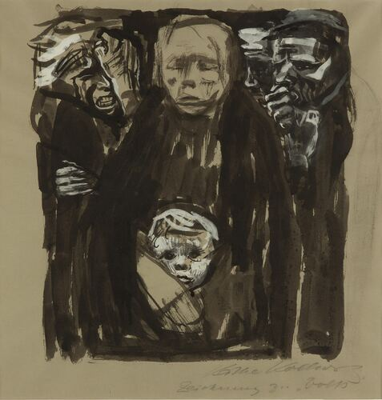
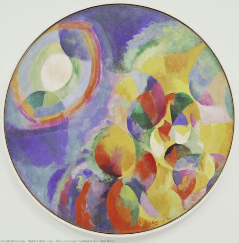

A curated study archive

German art of 1918–1933: New Objectivity, Expressionism, Dada, Bauhaus, the socially-critical tradition, and Weimar advertising graphics.

Non-objective painting & sculpture: Suprematism, Constructivism, Orphism, Abstract Expressionism, Colour Field, Op & Hard-edge.